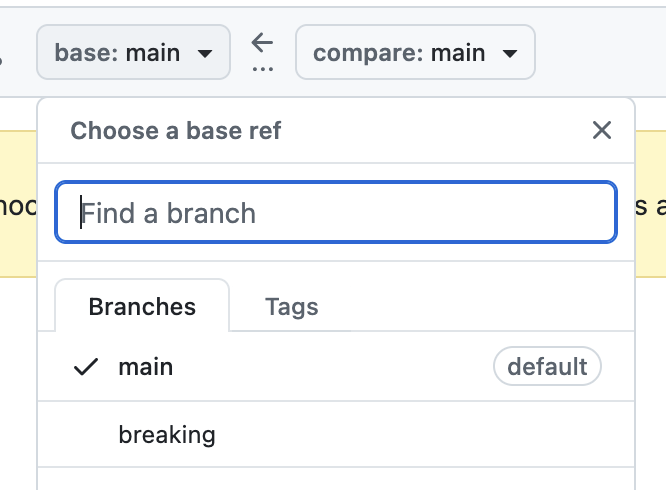

Contributing to Wren
This page provides a guide on the development practices in Wren, and how to make contributions to the project.
Getting started
You will of course need a working Julia installation.
The Wren GitHub repository is a monorepo: it contains multiple Julia packages (WrenDists, WrenCore, and Wren itself) in a single repository. This means that regardless of which package you are working on, you should clone the entire repository.
If you don't have push access to Wren, you will need to first fork it on GitHub, and clone your fork.
If you have push access to Wren, you can clone it directly and make a branch. It's customary but not necessary to prefix your branch name with your initials, so that it's easy to see who is working on what.
git clone https://github.com/JuliaBayes/Wren.jl.git
cd Wren.jl
git checkout -b initials/my-branch-nameNext, you'll need to instantiate the Julia environment. Suppose you want to work on WrenCore. Then, you can run
cd WrenCore
julia --project=.
julia> ]instantiateWren uses Pkg's workspace feature, which ensures that each package is developed in the context of the other packages. In other words, when you instantiate the WrenCore environment, it will use the version of WrenDists inside your local checkout. This feature requires at least Julia 1.12. However, we recommend developing on 1.13, as precompilation is much faster on 1.13.
Testing
Once you have made your changes, you should run the package tests. You can do this the traditional way with ]test from the Julia REPL in each package one by one.
If you are making a change in WrenCore, for example, you probably don't need to run the WrenDists tests. In such cases you should just skip it.
You can go even further and only run specific test files or testsets of a package. To do this, you will need to install TestPicker.jl; the tests in all Wren packages are already set up to use it.
When you are happy with your changes, you can push to your fork and open a pull request on GitHub. GitHub will run tests for all the packages in the repo.
Formatting
Wren uses JuliaFormatter across the entire repository.
The easiest way to format your code is to install JuliaFormatter as a Pkg app:
julia> ]app add JuliaFormatterThen, from the top level of the Wren directory, run
jlfmt --inplace .Optionally, Wren also has a pre-commit hook that automatically formats your code on each commit. To set this up, first install pre-commit, and then run from the top level of the repo
pre-commit installChangelogs
We require all code changes to be accompanied by a changelog entry. These can be found in the HISTORY.md file of each package.
Branch and version management
To keep track of semantic versioning in Wren packages, we maintain a separate long-lived breaking branch for the entire repository.
Any change that is backwards-incompatible on any of the three packages must be made on the breaking branch. To do this, start your branch from breaking instead of main, and when opening a pull request on GitHub, select breaking as the base branch.

When making a breaking change in a package, you should increment the minor version (i.e. 0.x.y -> 0.(x+1).0) in that package's Project.toml (unless the version of the package has already been incremented in the breaking branch, in which case you don't need to do anything). When making a non-breaking change, you should increment the patch version (i.e. 0.x.y -> 0.x.(y+1)).
If you make a breaking change on a lower-level package (i.e. WrenCore or WrenDists), you will need to increment the versions of the higher-level packages (i.e. Wren, and possibly WrenCore) to reflect the breaking change. In simple cases all you need to do is to increment the patch version and update the compatibility entry in the Project.toml. Please make sure to also include a changelog entry in the higher-level package (a short one is fine, e.g. "Update compatibility for WrenCore 0.x.y").
Why a monorepo?
A major reason for the monorepo is to make it easier to develop multiple packages at a time. Because these packages and their APIs are closely intertwined, a change in one can often necessitate changes in the others. The monorepo structure makes it possible to run tests (using GitHub Actions) for all packages in the repo at once, and to make sure that changes to the packages are synchronised.
Whilst this can be handled with multiple repositories, for example by using the [sources] section of Project.toml, this is much more cumbersome. In particular, it's difficult to iterate quickly on as you have to make a change in one repo, push it, and then update the other repo to point to the new version of the first repo.
Apart from this, there are numerous other benefits of this (this list is probably not even exhaustive):
- PRs and changes can be reviewed within the context of the entire project, instead of having to jump between different PRs on different repos.
- It's easier to move code between packages (just do it in one PR, instead of synchronising multiple PRs across multiple repos).
- It's easier to get started with development as you only need to clone one repo and instantiate the workspace, as opposed to cloning and
Pkg.dev-ing multiple folders.
Finally, another (less technical) reason for this is simply that the three packages are spiritually part of a single project. For example, the documentation for Wren (in the docs folder) is intended to cover the entire repo, not a specific package. That's why it lives in the root of the repo, instead of under one of the packages. This also means that, for example, GitHub issues can be centralised instead of being scattered across multiple repositories.
Information for maintainers
Unless you are maintaining the Wren repo, you probably do not need to think too much about everything in this section.
Tagging new releases
To trigger a release of WrenDists, you can use the usual JuliaRegistrator comment but additionally with subdir=WrenDists (likewise for WrenCore and Wren). Please make sure to include the release notes! (It's not fatal if you forget, but you'll have to go and change the description of the GitHub release after that.)
@JuliaRegistrator register subdir=WrenDists
Release notes:
[...]It can often be the case that you want to simultaneously release a version of two packages from the same repository commit. For example, this might be because there's a breaking change in WrenCore that necessitated a patch update in Wren. To do so, write one comment per release. However, in this scenario, note that you will need to wait for the WrenCore breaking release to be registered before you can register the Wren release (since the Wren release will depend on the new version of WrenCore).
Docs deployment
Everything in this section refers to the 'stable' version of the docs, which is built by the docs workflow whenever a new tag is pushed. But... a tag of which package?
As described above, conceptually the docs are intended to cover the entire repo (i.e. the entire Wren family), not just a single package. However, due to the way Documenter.jl works for monorepos, it proves easiest for us to deploy the built docs together with new versions of Wren. This means that Documenter generates one version of the docs in the gh-pages branch for each newly released tag of Wren.
Releases of WrenCore or WrenDists cannot be directly represented in the built docs. That means that, for example, if you are looking for the docs corresponding to version X.Y.Z of WrenCore, you will not be able to click on a link in the docs to get there.
However, breaking releases of WrenCore or WrenDists will at least necessitate a patch bump in Wren (if only to change the compatibility entry in Wren/Project.toml). Thus, this means that whenever WrenCore or WrenDists have breaking releases, the corresponding docs for those changes will be reflected in the docs for the new release of Wren, even if they don't have their own URLs.
Non-breaking changes in WrenCore or WrenDists will, however, not be reflected in the docs automatically, because they do not necessitate a new release of Wren. In such cases, it is permissible (and, if there are docs changes, strongly encouraged) to create a new patch release of Wren simply to force the published docs to be updated. The corresponding changelog entry in Wren should indicate that the release was made solely to update the built docs.